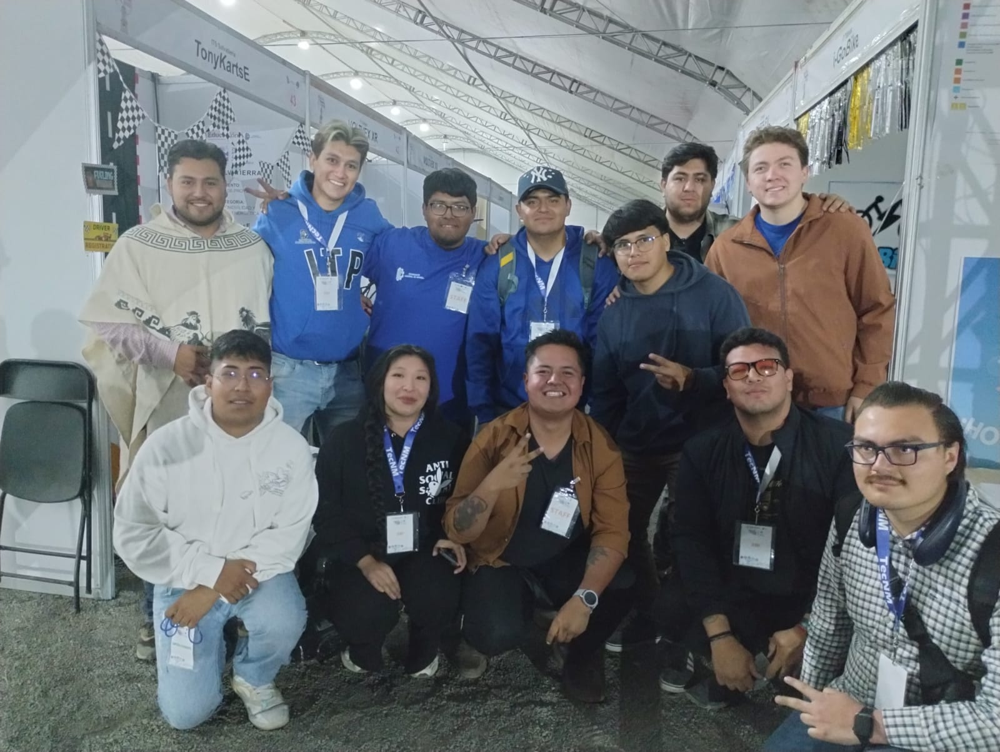

Verano Científico
Complementa tu formación académica participando en visitas industriales, concursos de innovación, proyectos científicos, congresos, talleres y eventos organizados por el Tecnológico Nacional de México.
Complementa tu formación académica participando en visitas industriales, concursos de innovación, proyectos científicos, congresos, talleres y eventos organizados por el Tecnológico Nacional de México.

El Tecnológico Nacional de México ofrece programas que impulsan la innovación, la investigación y el desarrollo profesional de sus estudiantes. Participar en ellos representa una excelente oportunidad para fortalecer tu perfil académico y adquirir experiencia de alto nivel.

Programa académico que permite a los estudiantes integrarse a proyectos de investigación científica y tecnológica, fortaleciendo sus competencias mediante el trabajo con investigadores especializados.
Conocer programa